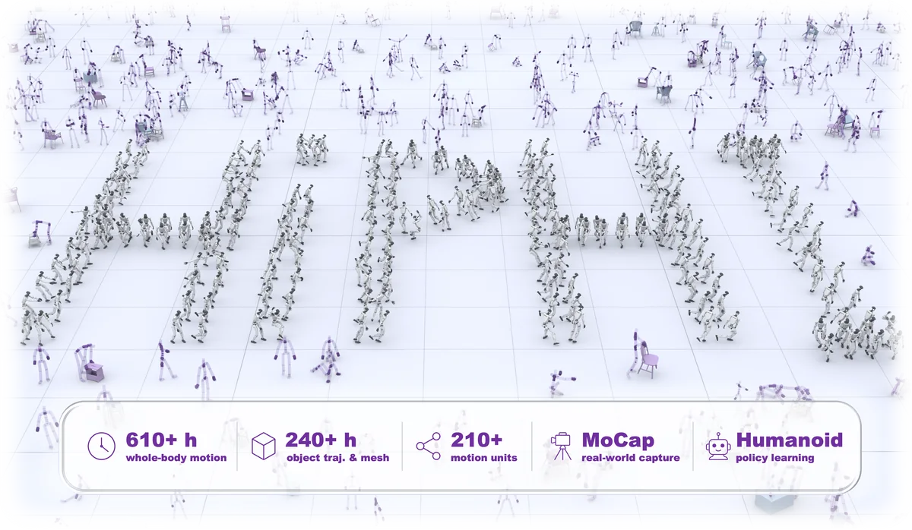
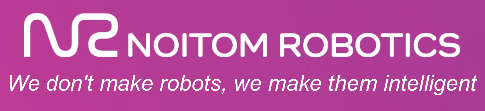

Algorithm Researcher · Noitom Robotics
Jiahao Ji 季嘉豪
I am a full-time Algorithm Researcher at Noitom Robotics. My work focuses on exploring and advancing scaling laws for embodied data.
My research interests include embodied foundation models, world models, and loco-manipulation. Before joining Noitom Robotics, I worked with Seed Robotics at ByteDance on digital asset reconstruction and dexterous manipulation. I’m always happy to chat about related research or potential collaborations—feel free to reach out.
Updates
News
-
Delighted to represent Noitom Robotics at IEEE RO-MAN 2026 with an invited talk on how human data scales embodied intelligence. See you in Kitakyushu!
-
Joined Noitom Robotics as a full-time Algorithm Researcher.
Selected research
Publications

arXiv paper · 2026
HiPHI: A Large-Scale Benchmark for High-Precision Human Motion and Object-Interaction
A FrameNet-guided, 617.5-hour optical MoCap benchmark pairing diverse whole-body motion with synchronized object trajectories and meshes for scalable humanoid learning.
Background
Experience

Noitom Robotics
Algorithm Researcher
- Motion Scaling
- Loco-Manipulation
- Human–Object Interaction
- Robot Learning
ByteDance · Seed Robotics
Algorithm Researcher
- Real2Sim2Real
- Articulated Asset Reconstruction
- Dexterous Manipulation
- Teleoperation
Training
Education
National University of Singapore
M.Sc. in Electrical Engineering
NUS Suzhou Research Institute
Joint Training Program
Beijing Institute of Technology
B.Eng. in Electronic Information Engineering